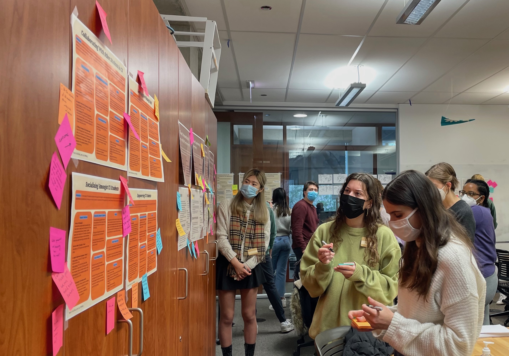
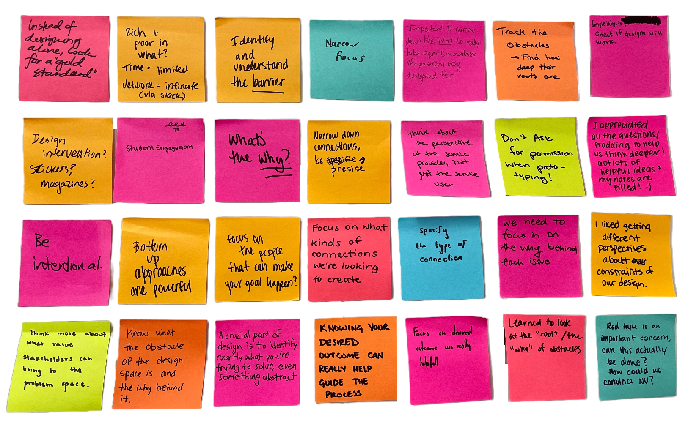

>>> Jan - Mar 2022
Project Type
Project Type
- Human-centered service design
Skills
- Problem framing
- Primary research
- Secondary research
- User interviews
- Stakeholder interviews
- Brainstorming
- Prototyping
- User testing
- Future development
- Videography
Role
- Brainstorm lead
- User testing lead
- Graphic designer
Nerdwestern: living up to the nickname
When initially confronted with this service design challenge, I was stumped. Mentally, I was still in 2020, never having properly said goodbye to my high school graduating class nor properly introduced to the Northwestern class of 2024. How could I establish a genuine sense of belonging for my peers when I myself felt so disconnected?

Thank goodness for the design process! Through thorough research on belonging and community, incessant creation of mind maps, stakeholder maps, journey maps, and personas, as well as countless brainstorming sessions yielding hundreds of ideas, we conceived the Hi-light.


The Hi-light is a rechargeable LED lamp designed for use in collaborative study spaces. With its innovative color code system, it enables students to communicate their work styles nonverbally, fostering organic interactions and cultivating a sense of belonging in both shared workspaces and the broader community.

We tested the Hi-light in Mudd Library, where many computer science students go to study, and they worked! Students sat with new people and cited feeling more connected to others in the space, regardless of whether or not there was an external interaction. Check out the final video below!
Lessons
- Brainstorm tons and tons of ideas – even comically bad ones inform functional solutions
- Having a reason to talk to someone makes new interaction much more approachable
- Making connections is as easy as saying hi. Seriously it is that simple
- Remember your audience. What will not only work for the users but be exciting and intuitive to interact with?